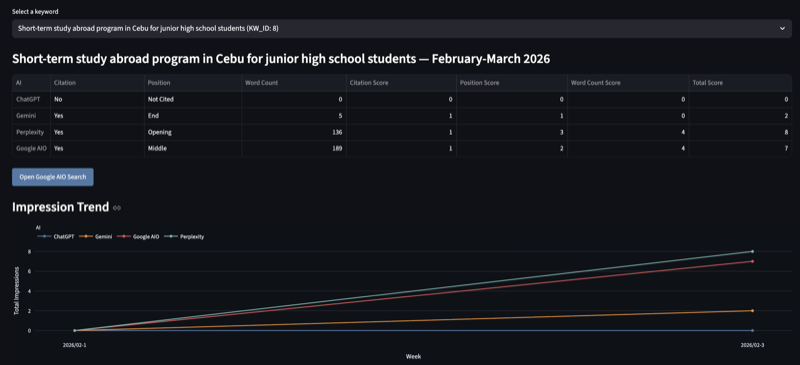

Trilingual growth strategist building GTM, GEO/AEO, and market-expansion systems across the US, Japan, and Korea.
I'm Kayoko Shimomura, a trilingual marketing strategist who builds growth systems at the intersection of content strategy and AI-driven search.
I've led market entry into Korea, rebuilt a study-abroad program's brand to grow enrollment 2.6x, and built the citation-monitoring infrastructure behind a 44x search ranking gain. I work across strategy, data, and design, equally comfortable in a GTM planning doc, a Figma file, or a SQL query.
Open to roles where I can stretch beyond my current experience, at the frontier where cultural insight, human judgment, and AI capability intersect.
Citation-monitoring system built from scratch, behind a top-3 search overhaul
Korea and Philippines program growth through rebrand and localization
Live SEO dashboard in Streamlit, connecting GA4, GSC, and Sheets API

citation-monitoring dashboard behind the 44x search ranking gain